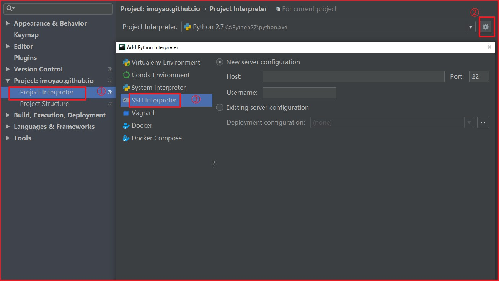
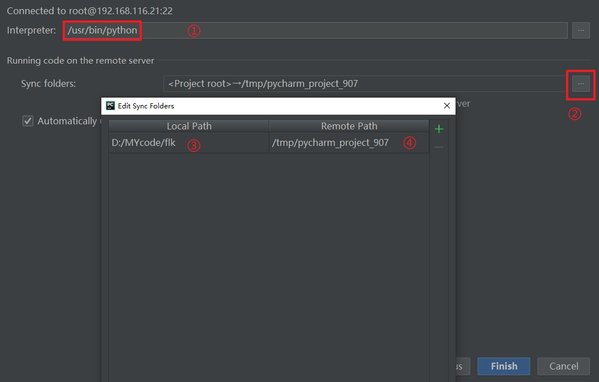
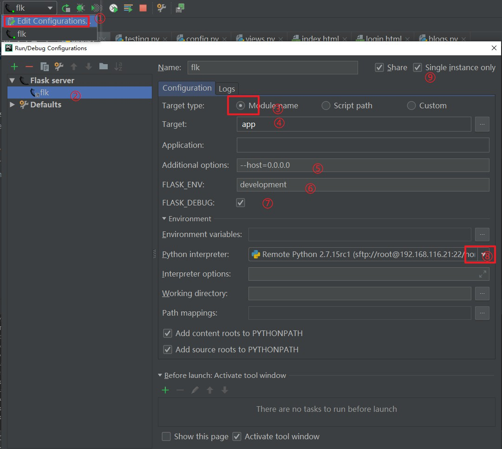

如何配置 Pycharm 使用远程的 Flask 虚拟开发环境？
学习Flask开发的时候，因为主机是Windows环境，而日常跑服务的是Linux环境，所以需要通过配置pycharm使之使用远端的虚拟环境。
创建虚拟机Flask环境
略
此处在网上可以找到很多写好的教程，不需要我再次叠床架屋了。
配置Pycharm环境
打开Pycharm的setting对话框，按照如下配置

依次输入真实远端信息之后，点击下一步，直到出现下方对话框

依次修改将要使用的解释器和主机与远端需要保持同步的目录；

如图设置之后运行，Run出现如下结果
FLASK_APP = app
FLASK_ENV = development
FLASK_DEBUG = 1
In folder D:/MYcode/flk
ssh://root@192.168.116.21:22/home/imoyao/envs/flk/bin/python -u -m flask run --host=0.0.0.0
* Serving Flask app "app" (lazy loading)
* Environment: development
* Debug mode: on
* Running on http://0.0.0.0:5000/ (Press CTRL+C to quit)
* Restarting with stat
* Debugger is active!
* Debugger PIN: 820-491-228
之后在本机访问虚拟机ip，比如本例中的192.168.116.21:5000，即可进入app首页。
注意问题
在配置好上述选项之后，运行可能会提示 NoAppException: Could not import "app".。这个问题暂时不知道是什么原因引起，可能是Pycharm识别路径有误导致，暂时没有找到很好的解决办法。大家可以参考下图尝试配置（递归手动设置目录，可能有用）。